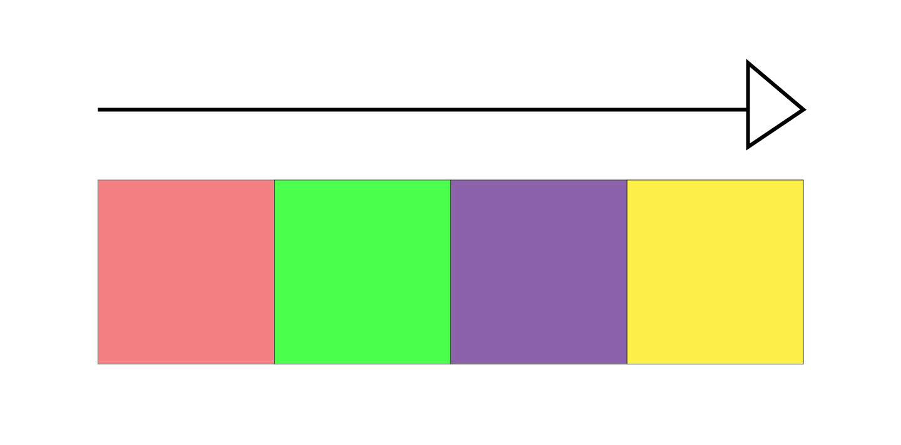

問題

1.お4.け7.ど
2.か5.め8.ん
3.つ6.い9.と
Instagram<

赤色のふうせんは2つ、緑色のふうせんは6つ、紫色のふうせんは4つ、黄色のふうせんは3つ
答え
赤色は2なので「か」、緑色は6なので「い」、紫色は4なので「け」、黄色は3なので「つ」
さんかくの問題の答えは「かいけつ」
1.お4.け7.ど
2.か5.め8.ん
3.つ6.い9.と
赤色のふうせんは2つ、緑色のふうせんは6つ、紫色のふうせんは4つ、黄色のふうせんは3つ
赤色は2なので「か」、緑色は6なので「い」、紫色は4なので「け」、黄色は3なので「つ」
さんかくの問題の答えは「かいけつ」